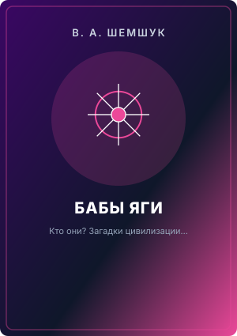
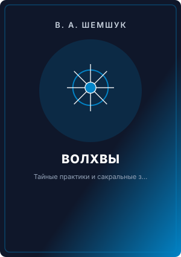
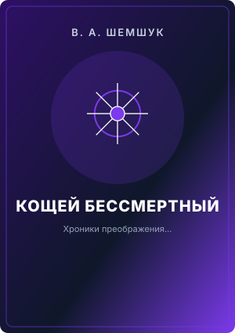
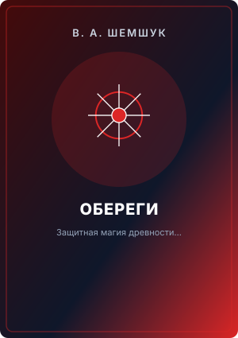

Бабы Яги - Кто Они
Рукописи не горят. Ничто и никогда не исчезает бесследно. Такие мысли сразу приходят на память после прочтения этой книги.
Фундаментальные исследования древнеславянской цивилизации, сакральных практик и законов гармоничного мироустройства.

Рукописи не горят. Ничто и никогда не исчезает бесследно. Такие мысли сразу приходят на память после прочтения этой книги.

Все люди по своей природе продолжают оставаться богами, хотя и лишены памяти о своих прошлых - божественных воплощениях.

Сегодня конечность человеческой жизни воспринимается нами как естественное, само собой разумеющееся явление.

Новое и дополненное издание! В этой книге сделана попытка ответить на вопросы, почему на земле не прекращаются войны и кризисы, почему с каж...
В этой книге изложены главные традиции древлеправославной цивилизации, собранные из различных источников, и частично изложенные автором из е...

Работа посвящена древлеправославной системе определения имён богов, необходимых для имени и звания человека.
Работа посвящена древлеправославной системе определения имён богов, необходимых для имени и звания человека.
Первая телепатическая книга
Исправленное и дополненное издание! Настоящий сборник исследований посвящен описанию достижений древних цивилизаций, причин их гибели и путе...
Новое и дополненное издание!Книга посвящена древнерусским традициям, вырванным с корнем из современной культуры.
Книга предназначена для сыроедов со стажем и для тех, кто хочет безболезненно перейти на сыроедение.
Календарь Жреца входит в серию Волшебная Русская Культура и является пособием по определению времени изготовления вещей, которое делает их ч...
Используя мифологию и научные данные, автор доказывает одно из утверждений Вед,что предшествующие цивилизации, по своему развитию находились...
Автор обосновывает реальность того света не только с позиции субъективных переживаний очевидцев, но и с точки зрения физики.
Метрика- ваш личный документ, позволяющий Вам построить свою дальнейшую жизнь в соответствии с гармонией, заложенной в природе.
Эта книга посвящена древнерусским ритуалам и обрядам, замененными сегодня на католическую бутафорию.
Книга посвящена древнерусским традициям, вырванным с корнем из культуры землян.
Книга предназначена для всех желающих омолодиться и оставаться всегда молодым.
В этой книге изложены основы целительства Русского жречества. Книга рассчитана на читателей, познакомившихся с работами автора из серии "В п...
Владимир Шемшук известен нам как иследователь древней русской культуры и пропагандист Священных Рощ.
В этой работе изложены основы древлеправославной веры, покоящейся на чудесных дисциплинах русской волшебной культуры.
В книге рассмотрены условия жизненности общин, дан исторический анализ и прогноз их развития.
Книга "Русь борейская" входит в серию "В поисках сокровенного". В ней осуществлена попытка воссоздания развёрнутой панорамы непроявленных со...
В этой книге представлены читателю в стихотворной форме Славы русским Богам.
В словаре рассмотрены значения как обычных, но имевших совсем иное значение, так и исчезнувших слов, характеризовавших волшебность древлепра...
Книга предназначена для всех, кто рискует оказаться на самом дне жизни: для бизнесменов, банкиров, предпринимателей, директоров фирм и завод...
В книге рассказано о фантастических результатах сыроедения, раскрыты механизмы, объясняющие феномены поразительного оздоровления и излечения...
Настоящее исследование проясняет влияние Священных Рощ на экологию, биосферу и общество.
По заявкам читателей, переиздана и дополнена книга "Украденная история".Книга "Украденная история России, Европы, Азии и Америки", входит в...
Хроника Великой Руссии объединяет ранее вышедшие книги автора "Запрещенная история" и "Украденная история".
Несмотря на то, что взрыв Йеллоустоунского супервулкана уничтожит не только Америку, но и всех людей на Земле, автор рассчитывает на благора...
Наконец-то свершилось. Прозревшее сердце, погруженное в череду бесконечных рождений и смертей, отчаявшееся найти свой отчий дом, утопающее в...
Человек не может жить без веры, без четких социальных ориентиров. Этические принципы, вытекающие из народной философии и национальной морали...
Автор использует жреческие знания, и на примере сыроедения, исследует культуру Русского волшебного питания.
Книга посвящена вопросам, которые надо проработать и домашним заданиям Школы Жрецов
Книга "Плоская Земля и Теория относительности" или "Почему с нами не контачат инопланетяне" входит в серию "поисках сокровенного" и отвечает...
Твёрдый переплёт.Используя мифологию и фольклорные данные и старые традиции сохранившейся в русской глубинке, автор предпринял попытку восст...
Автор собрал и изложил старинные способы оживления умерших людей, позволявшие человеку полностью восстановится после смерти.
В этой работе вкратце изложена история русского жречества, носителей чудесных знаний русской волшебной культуры.
В этой работе вкратце изложена история катастроф, происшедших за последнее время на Земле.
В этой работе изложена основа, в чем заключается божественность русского языка и как она проявляется.
На протяжении последних 70 лет правительства ведущих стран мира вынуждены были заниматься сокрытием факта инопланетного присутствия на Земле...
В этой работе вкратце изложены традиции и принципы образования, обучения, формирования, просвещения, умения и программы в русской древлеправославной школе.
Зачала Ведической Арифметики
В этой работе изложены основы, хранения умерших людей для последующего их оживления.
Самый запутанный и самый табуированный вопрос - это вопрос истории религий и их священных книг.
Цветная, формат А4. Для кого и для чего написана эта книга? Для узкого круга специалистов или для широкого круга читателей? Первым она приго...
Эта книга предназначена для всех, кто хочет избавиться от современных иллюзий и вырваться из рабства захватчиков нашей планеты, в котором ок...
Книга рассчитана на профессиональных повитух, на девушек и женщин решивших стать мамами, вреде абортов, а также на всех думающих людей котор...
В этой работе вкратце изложены причины появления на земле множества наций и народов и сделана попытка сосчитать количество погибших планет,...
В книге изложена информация о параллельных цивилизациях, с которыми мы живём бок о бок на Земле и не подозреваем об ихсуществовании.